컴퓨터활용능력-1급 (2017-09-02 기출문제)
1과목: 컴퓨터 일반
1. 다음 중 사운드의 압축 및 복원과 관련된 기술이 아닌 것은?
- FLAC
- AIFF
- H.264
- WAV
(정답률: 89%)

2. 다음 중 그래픽 데이터의 표현 방식에 대한 설명으로 옳지 않은 것은?
- 비트맵 방식은 픽셀(pixel)이라고 하는 여러 개의 점들로 이미지를 표현하는 방식이다.
- 이미지를 비트맵 방식으로 저장한 경우 벡터 방식에 비해 메모리를 적게 차지하지만 화면에 이미지를 보여주는 속도는 느리다.
- 벡터 방식은 점과 점을 연결하는 직선이나 곡선을 이용하여 이미지를 표현하는 방식이다.
- 벡터 방식은 그림을 확대 또는 축소할 때 화질의 손상이 거의 없다.
(정답률: 79%)
3. 다음 중 프로그램을 직접 감염시키지 않고 디렉토리 영역에 저장된 프로그램의 시작 위치를 바이러스의 시작 위치로 변경하는 파일 바이러스 유형은?
- 연결형 바이러스
- 기생형 바이러스
- 산란형 바이러스
- 겹쳐쓰기형 바이러스
(정답률: 76%)
4. 다음 중 인터넷에서 방화벽을 사용하는 이유로 적절하지 않은 것은?
- 외부로부터 허가받지 않은 불법적인 접근이나 해커의 공격으로부터 내부의 네트워크를 효과적으로 보호할 수 있다.
- 방화벽의 접근제어, 인증, 암호화와 같은 기능으로 네트워크를 보호할 수 있다.
- 역추적 기능으로 외부의 침입자를 역추적하여 흔적을 찾을 수 있다.
- 외부에 대한 보안이 완벽하며, 내부의 불법적인 해킹도 막을 수 있다.
(정답률: 92%)
5. 다음 중 DNS가 가지고 있는 특정 도메인의 IP Address를 검색해 주는 서비스는?
- Gopher
- Archie
- IRC
- Nslookup
(정답률: 76%)
6. 다음 중 컴퓨터 통신의 OSI 7계층에서 사용되는 장비와 해당 계층의 연결이 옳지 않은 것은?
- 물리 계층 - 리피터(Repeater), 허브(Hub)
- 데이터 링크 계층 - 브릿지(Bridge), 스위치(Switch)
- 네트워크 계층 - 라우터(Router)
- 응용 계층 - 게이트웨이(Gateway)
(정답률: 75%)
7. 다음 중 전자 우편에 사용되는 프로토콜인 POP3(Post Office Protocol 3)에 관한 설명으로 옳은 것은?
- 사용자의 컴퓨터에서 작성한 메일을 다른 사람의 계정이 있는 곳으로 전송해 주는 역할을 한다.
- 메일 서버에 도착한 메일을 사용자 컴퓨터로 가져와 관리한다.
- 웹 브라우저가 지원하지 않는 각종 멀티미디어 파일의 내용을 확인한 후 실행해 준다.
- 메일을 패킷으로 나누어 패킷 주소를 해석하고 경로를 결정하여 메일 서버로 보낸다.
(정답률: 72%)
8. 다음 중 네트워크 망의 구성 형태에 대한 설명으로 옳지 않은 것은?
- 트리형(Tree)은 허브를 이용하여 계층적으로 구성한 형태이다.
- 버스형(Bus)은 하나의 통신 회선에 여러 대의 컴퓨터를 연결한 형태이다.
- 링형(Ring)은 모든 컴퓨터를 그물 모양으로 서로 연결한 형태이다.
- 스타형(Star)은 각 컴퓨터를 허브와 점 대 점으로 연결한 형태이다.
(정답률: 85%)
9. 다음 중 컴퓨터 운영체제의 운영방식에 대한 설명으로 옳지 않은 것은?
- 일괄 처리(Batch Processing): 컴퓨터에 입력하는 데이터를 일정량 또는 일정시간 동안 모았다가 한꺼번에 처리하는 방식이다.
- 실시간 처리(Real Time Processing): 처리할 데이터가 입력될 때 마다 즉시 처리하는 방식으로 각종 예약 시스템이나 은행 업무 등에서 사용한다.
- 다중 처리(Multi-Processing): 한 개의 CPU로 여러 개의 프로그램을 동시에 처리하는 방식이다.
- 시분할 시스템(Time Sharing System): 한 대의 시스템을 여러 사용자가 동시에 사용하는 방식으로 처리 시간을 짧은 시간 단위로 나누어 각 사용자에게 순차적으로 할당하여 실행한다.
(정답률: 82%)
10. 다음 중 컴퓨터의 수 연산에서 사용되는 보수(Complement)에 대한 설명으로 옳지 않은 것은?
- 보수는 컴퓨터 연산에서 덧셈 연산을 이용하여 뺄셈을 수행하기 위해 사용한다.
- N진법에는 N의 보수와 N-1의 보수가 존재한다.
- 2진수 1010의 1의 보수는 0을 1로, 1을 0으로 바꾼 0101에 1을 더한 것이다.
- 2진수 10101의 2의 보수는 01011이다.
(정답률: 65%)
11. 다음 중 컴퓨터에서 사용하는 유니코드(unicode)에 대한 설명으로 옳지 않은 것은?
- 세계 각국의 언어를 통일된 방법으로 표현할 수 있게 제안된 국제적인 코드 규약의 이름이다.
- 8비트 문자코드인 아스키(ASCII) 코드를 32비트로 확장 하여 전 세계의 모든 문자를 표현하는 표준코드이다.
- 한글은 조합형, 완성형, 옛글자 모두를 표현할 수 있다.
- 최대 65,536자의 글자를 코드화할 수 있다.
(정답률: 82%)
12. 다음 중 컴퓨터 소프트웨어에서 셰어웨어(Shareware)에 관한 설명으로 옳은 것은?
- 정해진 금액을 지불하고 정식으로 사용하는 프로그램이다.
- 사용 기간과 일부 기능을 제한하여 정식 제품의 구입을 유도하기 위한 프로그램이다.
- 사용 기간의 제한 없이 무료 사용과 배포가 가능한 프로그램이다.
- ROM에 저장되며, BIOS와 관련이 있는 시스템 프로그램이다.
(정답률: 78%)
13. 다음 중 3D 프린터에 관한 설명으로 옳지 않은 것은?
- 입력한 도면을 바탕으로 3차원 입체 물품을 만들어내는 프린터이다.
- 인쇄 방식은 레이어로 쌓아 입체 형상을 만드는 적층형과 작은 덩어리를 뭉쳐서 만드는 모델링형이 있다.
- 인쇄 원리는 잉크를 종이 표면에 분사하여 2D 이미지를 인쇄하는 잉크젯 프린터의 원리와 같다.
- 기계, 건축, 예술, 우주 등 많은 분야에서 응용되고 있으며, 의료 분야에서도 활발히 활용되고 있다.
(정답률: 71%)
14. 다음 중 캐시(Cache) 메모리에 관한 설명으로 옳은 것은?
- 캐시 메모리로 DRAM이 사용되어 접근 속도가 매우 빠르다.
- 캐시 적중률이 높을수록 컴퓨터 시스템의 전체 처리 속도가 저하된다.
- 캐시 메모리는 보조기억장치의 일부를 주기억장치처럼 사용하는 메모리이다.
- CPU와 주기억장치 사이에서 처리속도를 향상시키기 위한 일종의 버퍼 메모리 역할을 한다.
(정답률: 78%)
15. 다음 중 PC 관리에 대한 설명으로 옳지 않은 것은?
- 직사광선과 습기가 많거나 자성이 강한 물체가 있는 곳은 피하는 것이 좋다.
- 무정전 전원 공급장치(UPS)를 설치하면 전압이나 전류가 갑자기 증가할 경우 발생할 수 있는 시스템 손상을 방지할 수 있다.
- 컴퓨터 전용 전원 장치를 단독으로 사용하고, 전원을 끌 때는 사용 중인 프로그램을 먼저 종료하는 것이 좋다.
- 컴퓨터의 성능 향상을 위해 주기적으로 디스크 정리, 디스크 검사, 디스크 조각 모음 등을 실행하는 것이 좋다.
(정답률: 78%)
16. 다음 중 중앙처리장치와 입출력장치 사이의 속도차이로 인한 문제를 해결하기 위한 장치는?
- 범용 레지스터
- 터미널
- 콘솔
- 채널
(정답률: 85%)
17. 다음 중 Windows 7에서 파일의 검색 기능을 향상시키기 위한 기능은?(윈도우 10 검증 완료)
- 색인
- 압축
- 복원
- 백업
(정답률: 89%)
18. 다음 중 Windows 7에서 [시스템 속성] 창의 [고급] 탭에서 설정 가능한 기능으로 옳지 않은 것은?(윈도우 10 검증 완료)
- 프로세서 리소스 할당 방법, 가상 메모리의 크기 등을 지정할 수 있다.
- 컴퓨터의 디스크에 대해 시스템 보호를 설정하거나 해제할 수 있다.
- 사용자 계정과 관련된 바탕 화면 설정과 기타 정보를 확인하고 사용자 유형 변경, 삭제, 복사 등의 작업을 할 수 있다.
- 시스템에 이상이 있을 경우에 취할 수 있는 방법을 지정할 수 있다.
(정답률: 35%)
19. 다음 중 Windows 7의 [휴지통]에 관한 설명으로 옳지 않은 것은?(윈도우 10 검증 완료)
- 휴지통에 지정된 최대 크기를 초과하면 보관된 파일 중 가장 용량이 큰 파일부터 자동 삭제된다.
- 휴지통에 보관된 실행 파일은 복원은 가능하지만 휴지통에서 실행하거나 이름을 변경할 수는 없다.
- 휴지통 속성에서 파일이나 폴더가 삭제될 때마다 삭제 확인 대화상자가 표시되지 않도록 설정할 수 있다.
- 휴지통의 파일이 실제 저장된 폴더 위치는 일반적으로 C:\$Recycle.Bin이다.
(정답률: 88%)
20. 다음 중 Windows 7의 [제어판]-[프로그램 및 기능]에 대한 설명으로 옳지 않은 것은?(윈도우 10 검증 완료)
- Windows에 설치되어 있는 응용 프로그램을 변경하거나 제거할 수 있다.
- 게임, 인쇄 및 문서 서비스, 인터넷 정보 서비스 등 Windows 7에 포함되어 있는 다양한 기능의 사용 여부를 선택할 수 있다.
- 설치된 업데이트를 확인할 수 있으며, 업데이트 목록에서 업데이트를 제거하거나 변경할 수 있다.
- [온라인으로 추가 테마보기]를 선택하여 Microsoft 사에서 제공하는 다양한 테마를 추가 설치할 수 있다.
(정답률: 71%)
2과목: 스프레드시트 일반
21. 다음 중 [목표값 찾기] 대화상자에 대한 설명으로 옳지 않은 것은?
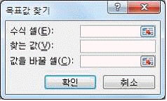
- '수식 셀'상자에 목표값 찾기에 의해 변경되는 셀 주소를 입력한다.
- '찾는 값'상자에 원하는 수식이 있는 셀 주소를 입력 한다.
- '값을 바꿀 셀'상자에 조정할 값이 있는 셀 주소를 입력한다.
- 목표값 찾기는 하나의 변수 입력 값만 사용된다.
(정답률: 61%)
22. 다음 중 워크 시트에 외부 데이터를 가져오는 방법으로 적절하지 않은 것은?
- Microsoft Query 사용
- 웹 쿼리 사용
- 데이터 연결 마법사 사용
- 하이퍼링크 사용
(정답률: 68%)
23. 다음 중 [찾기 및 바꾸기] 대화상자에 대한 설명으로 옳지 않은 것은?
- 특정 서식이 있는 텍스트나 숫자를 찾을 수 있다.
- 데이터를 뒤에서부터 앞으로 검색하려면 <Ctrl>키를 누른 상태에서 <다음 찾기>를 클릭한다.
- 영문자의 경우 대/소문자를 구분하여 찾을 수 있다.
- 찾는 위치를 수식, 값, 메모 중에서 선택하여 지정할 수 있다.
(정답률: 66%)
24. 다음 중 아래 워크시트에서의 [중복된 항목 제거] 기능에 대한 설명으로 옳지 않은 것은?
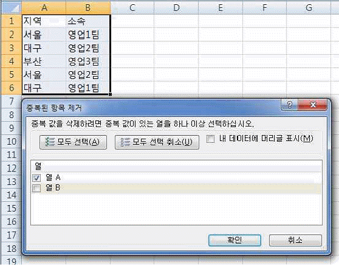
- [중복된 항목 제거]를 실행하면 동일한 데이터의 첫 번째 레코드를 제외한 나머지 레코드가 삭제된다.
- [중복된 항목 제거] 대화상자에서 [내 데이터에 머리글 표시]를 선택하면 대화상자의 '열' 목록에 '열 A' 대신 '지역', '열 B' 대신 '소속'이 표시된다.
- 중복 값을 제거하면 선택한 셀 범위나 테이블 값이 제거되고, 제거된 만큼의 해당 셀 범위나 테이블 밖의 다른 값도 변경되거나 이동된다.
- 위 대화상자에서 '열 A'와 '열 B'를 모두 선택하고 실행하면 '중복된 값이 없습니다'라는 메시지 박스가 나타난다.
(정답률: 57%)
25. 다음 중 고급 필터의 조건 범위를 [E1:G3] 영역으로 지정한 후 고급 필터를 실행했을 때 결과로 옳은 것은?(단, [G3] 셀에는 '=C2>=AVERAGE($C$2:$C$5)'이 입력되어 있다. )
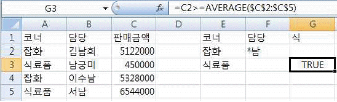
- 코너가 '잡화' 이거나 담당이 '남'으로 끝나고, 코너가 '식료품'이거나 판매금액이 판매금액의 평균 이상인 데이터
- 코너가 '잡화' 이거나 '식료품'이고, 담당에 '남'이 포함되거나 판매금액의 평균이 5,122,000 이상인 데이터
- 코너가 '잡화' 이고 담당이 '남'으로 끝나거나, 코너가 '식료품'이고 판매금액이 판매금액의 평균 이상인 데이터
- 코너가 '잡화' 이고 담당이 '남'이 포함되거나, 코너가 '식료품'이고 판매금액의 평균이 5,122,000 이상인 데이터
(정답률: 65%)
26. 다음 중 과학, 통계 및 공학 데이터와 같은 숫자 값을 표시하고 비교하는데 주로 사용되며, 두 개의 숫자 그룹을 xy 좌표로 이루어진 하나의 계열로 표시하기에 적합한 차트 유형은?
- 영역형 차트
- 주식형 차트
- 분산형 차트
- 방사형 차트
(정답률: 72%)
27. 다음 중 A열의 글꼴 서식을 '굵게'로 설정하는 매크로로 옳지 않은 것은?
- Range("A:A").Font.Bold = True
- Columns(1).Font.Bold = True
- Range("1:1").Font.Bold = True
- Columns("A").Font.Bold = True
(정답률: 66%)
28. 아래의 워크시트에서 [D1] 셀에 숫자를 입력한 후 [오류 추적 단추]가 표시되었다. 다음 중 아래의 오류 표시에 대한 설명으로 옳지 않은 것은?
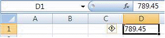
- 오류 검사 규칙으로 '오류를 반환하는 수식이 있는 셀'이 선택되어 있는 경우 그림과 같이 셀 왼쪽에 [오류 추적 단추]가 나타난다.
- 숫자를 셀에 입력한 후 텍스트로 서식을 지정한 경우에 나타난다.
- [오류 추적 단추]를 눌러 나타난 메뉴 중 [숫자로 변환]을 클릭하면 오류 표시가 사라지고 숫자로 정상 입력된다.
- 텍스트로 서식이 지정된 셀에 숫자를 입력하는 경우 오류 표시기가 나타난다.
(정답률: 53%)
29. 다음 중 아래 워크 시트의 [A1] 셀에서 10.1을 입력한 후 <Ctrl>키를 누르고 자동 채우기 핸들을 아래로 드래그한 경우 [A4] 셀에 입력되는 값은?
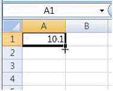
- 10.1
- 10.4
- 13.1
- 13.4
(정답률: 66%)
30. 다음 중 셀에 자료를 입력하고 표시 형식을 적용하였을 때 셀에 표시되는 결과로 옳지 않은 것은?
- 입력 자료 : 0.5
표시 형식 : hh:mm
결과: 12:00 - 입력 자료 : 10
표시 형식 : yyyy-mm-dd
결과 : 1900-01-10 - 입력 자료: 1234
표시 형식 : #,
결과 : 1 - 입력 자료 : 13
표시 형식 : ##*!
결과 : 13*!
(정답률: 64%)
31. a=MsgBox("작업을 종료합니까?“, vbYesNoCancel + vbQuestion, "확인”)이라는 VBA 코드로 표시되는 메시지 박스에 관한 설명으로 옳지 않은 것은?
- 메시지 박스에 정보 아이콘(
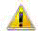
)이 표시된다. - 메시지 박스의 제목으로 '확인'이 표시된다.
- 메시지 박스의 <Esc>키를 누르면 작업이 취소된다.
- 메시지 박스에'예', '아니오', '취소' 버튼이 표시된다.
(정답률: 63%)
32. 다음 중 성별이 '여'인 직원의 근속년수 합계를 구하는 수식으로 옳지 않은 것은?
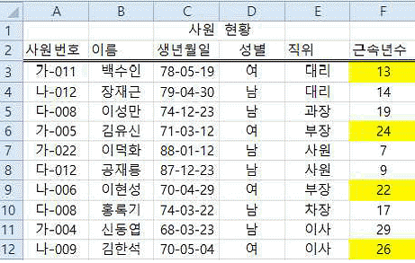
- =DSUM(A2:F12,F2,D2:D3)
- =SUMIFS(F3:F12,D3:D12,"=D3")
- {=SUM(IF(D3:D12=D3,F3:F12,0))}
- =SUMIF(D3:F12,D3,F3:F12)
(정답률: 45%)
33. 아래 워크시트에서 일자[A2:A7], 제품명[B2:B7], 수량[C2:C7], [A9:C13] 영역을 이용하여 금액[D2:D7]을 배열수식으로 계산하고자 한다. 다음 중 [D2] 셀에 입력된 수식으로 옳은 것은?(단, 금액은 단가*수량으로 계산하며, 단가는 [A9:C13] 영역을 참조하여 구함)
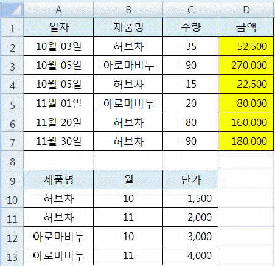
- {=INDEX( $C$10:$C$13, MATCH( MONTH(A2)&B2, $B$10:$B$13&$A$10:$A$13, 0))*C2}
- {=INDEX( $C$10:$C$13, MATCH( MONTH(A2)&B2, $A$10:$A$13,$A$10:$A$13, 0))*C2}
- {=INDEX( $C$10:$C$13, MATCH( MONTH(A2),B2, $B$10:$B$13&$A$10:$A$13, 0))*C2}
- {=INDEX( $C$10:$C$13, MATCH( MONTH(A2),B2, $A$10:$A$13&$B$10:$B$13, 0))*C2}
(정답률: 52%)
34. 다음 중 [인쇄 미리 보기] 상태에서 설정할 수 있는 기능에 대한 설명으로 옳지 않은 것은?
- '여백 표시'가 되어 있는 경우 미리 보기로 표시된 워크시트의 열 너비를 조정할 수 있다.
- [페이지 설정]에서 '인쇄 영역'을 변경하여 인쇄할 수 있다.
- [머리글/바닥글]로 설정한 내용은 매 페이지 상단이나 하단의 별도 영역에, 인쇄 제목의 반복할 행/열은 매 페이지의 본문 영역에 반복 출력된다.
- [페이지 설정]에서 확대/축소 배율을 10%에서 최대 400%까지 설정하여 인쇄할 수 있다.
(정답률: 39%)
35. 다음 중 수식의 실행 결과가 나머지 셋과 다른 것은?
- =COLUMNS(C1:E4)
- =COLUMNS({1,2,3;4,5,6})
- =MOD(2, -5)
- =COUNT(0, "거짓", TRUE, "1")
(정답률: 62%)
36. 다음 중 아래 워크시트를 이용한 수식의 실행 결과가 나머지 셋과 다른 것은?
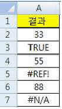
- =IFERROR(ISLOGICAL(A3), “ERROR”)
- =IFERROR(ISERR(A7), “ERROR”)
- =IFERROR(ISERROR(A7),“ERROR”)
- =IF(ISNUMBER(A4), TRUE, “ERROR”)
(정답률: 52%)
37. 다음 중 통합 문서 저장 시 사용하는 [일반 옵션]에 관한 설명으로 옳지 않은 것은?
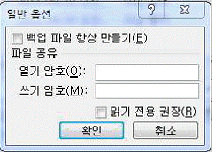
- [백업 파일 항상 만들기]는 통합 문서를 저장할 때마다 백업 복사본을 저장하는 기능이다.
- [열기 암호]는 암호를 모르면 통합 문서를 열어 사용할 수 없도록 암호를 지정하는 기능이다.
- [쓰기 암호]는 암호를 모르더라도 읽기 전용으로 열어 열람이 가능하나 원래 문서 및 복사본으로 통합 문서를 저장할 수 없도록 암호를 지정하는 기능이다.
- [읽기 전용 권장]은 문서를 열 때마다 통합 문서를 읽기 전용으로 열도록 대화상자를 나타내는 기능이다.
(정답률: 73%)
38. 다음 중 차트 도구의 [데이터 선택]에 대한 설명으로 옳지 않은 것은?(엑셀 2007 기준 문제 입니다.)
- [차트 데이터 범위]에서 차트에 사용하는 데이터 전체의 범위를 수정할 수 있다.
- [행/열 전환]을 클릭하여 가로 (항목) 축의 데이터 계열과 범례 항목(계열)을 바꿀 수 있다.
- 데이터 계열이 범례에서 표시되는 순서를 바꿀 수 있다.
- 데이터 범위 내에 숨겨진 행이나 열의 데이터도 차트에 표시된다.
(정답률: 59%)
39. 다음 중 [틀 고정] 기능에 대한 설명으로 옳지 않은 것은?
- 워크시트를 스크롤할 때 특정 행이나 열이 한 자리에 계속 표시되도록 선택할 수 있는 기능이다.
- 첫 행과 첫 열을 동시에 고정하여 표시되도록 설정할 수 있다.
- 틀 고정은 통합 문서 보기가 [페이지 레이아웃] 상태 일 때 설정할 수 있다.
- 화면에 표시되는 틀 고정의 형태는 인쇄 시 적용되지 않는다.
(정답률: 65%)
40. 다음 중 워크시트에 대한 설명으로 옳은 것은?
- 워크시트 복사는 <Alt>키를 누르면서 원본 워크시트 탭을 마우스로 드래그 앤 드롭하면 된다.
- 시트를 삭제하려면 시트 탭에서 마우스 오른쪽 단추를 클릭한 후 표시되는 [삭제] 메뉴를 선택하면 되지만, 삭제된 시트는 되살릴 수 없으므로 유의하여야 한다.
- 연속된 여러 개의 시트를 선택할 때는 첫 번째 시트를 선택하고 <Ctrl>키를 누른 상태에서 마지막 워크시트의 시트 탭을 클릭하면 된다.
- 떨어져 있는 여러 개의 시트를 선택할 때는 먼저 <Shift>키를 누른 상태에서 원하는 워크시트의 시트 탭을 차례로 누르면 된다.
(정답률: 64%)
3과목: 데이터베이스 일반
41. 다음 중 매크로(MACRO)에 관한 설명으로 옳지 않은 것은?
- 매크로는 작업을 자동화하고 폼, 보고서 및 컨트롤에 기능을 추가하는 데 사용되는 도구이다.
- 매크로 개체는 탐색 창의 매크로에 표시되지만 포함된 매크로는 표시되지 않는다.
- 매크로가 실행 중일 때 한 단계씩 실행을 시작하려면 <Ctrl>+<Break> 키를 누른다.
- 자동실행 매크로가 실행되지 않게 하려면 <Ctrl>키를 누른 채 데이터베이스 파일을 연다.
(정답률: 38%)
42. 다음 중 VBA의 모듈에 대한 설명으로 적절하지 않은 것은?
- 모듈은 여러 개의 프로시저로 구성할 수 있다
- 전역변수 선언을 위해서는 PUBLIC으로 변수명 앞에 지정해 주어야 한다.
- SUB는 결과 값을 SUB를 호출한 곳으로 반환한다.
- 선언문에서 변수에 데이터 형식을 생략하면 변수는 VARIANT 형식을 가진다.
(정답률: 52%)
43. 다음 중 데이터베이스관리시스템(DBMS)의 장점에 해당하지 않는 것은?
- 데이터의 일관성 유지
- 데이터의 무결성 유지
- 데이터의 보안 보장
- 데이터간의 종속성 유지
(정답률: 65%)
44. 다음 중 아래 쿼리에서 두 테이블에 조인된 필드가 일치하는 레코드만 결합하기 위해 괄호 안에 넣어야 할 조인 유형으로 옳은 것은?
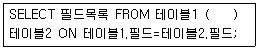
- INNER JOIN
- OUTER JOIN
- LEFT JOIN
- RIGHT JOIN
(정답률: 80%)
45. 다음 중 [학생] 테이블의 'S_Number' 필드를 [데이터시트 보기] 상태에서는 '학번'으로 표시하고자 할때 설정해야 할 항목은?
- 형식
- 캡션
- 스마트 태그
- 입력 마스크
(정답률: 72%)
46. 다음 중 하나의 테이블로만 구성되어 있는 데이터베이스에서 쿼리 마법사를 이용하여 만들 수 없는 쿼리는?
- 단순 쿼리
- 중복 데이터 검색 쿼리
- 크로스탭 쿼리
- 불일치 검색 쿼리
(정답률: 49%)
47. 다음 중 보고서에 관한 설명으로 옳은 것은?
- 보고서의 각 구역은 표시하거나 숨길 수 있으나 보고서 머리글은 항상 표시되어야 하는 구역으로 숨김 설정이 안된다.
- 보고서 레이아웃 보기에서는 실제 보고서 데이터를 바탕으로 열 너비를 조정하거나 그룹 수준 및 합계를 추가할 수 있다.
- 보고서에서는 바운드 컨트롤과 계산 컨트롤만 사용 가능하므로 언바운드 컨트롤의 사용을 주의해야 한다.
- 보고서의 그룹 중첩은 불가능하며, 같은 필드나 식에 대해 한 번씩만 그룹을 만들 수 있다.
(정답률: 48%)
48. 다음 중 보고서 마법사로 보고서를 생성하는 과정에서 지정할 수 있는 요약 정보에 대한 설명으로 옳지 않은 것은?
- 텍스트 속성인 필드만으로 구성된 테이블에는 요약 옵션을 사용 할 수 없다.
- 요약 옵션은 정렬 순서 지정 단계에서 지정하는 것으로 그룹 수준과는 무관하다.
- 요약 옵션으로 지정된 필드의 합계, 평균, 최대값, 최소값을 구할 수 있다.
- 테이블 간의 관계를 미리 지정해 둔 경우 둘 이상의 테이블에 있는 필드를 사용할 수 있다.
(정답률: 49%)
49. 회원목록 보고서는 '지역' 필드를 기준으로 정렬되어 있다. 다음 중 동일한 지역인 경우 지역명이 맨 처음에 한 번만 표시되도록 하기 위한 속성으로 옳은 것은?
- [확장 가능] 속성을 '아니오'로 설정
- [누적 합계] 속성을 '예'로 설정
- [중복 내용 숨기기] 속성을 '예'로 설정
- [표시] 속성을 '아니오'로 설정
(정답률: 80%)
50. 하위 보고서를 만들 때 아래의 조건을 만족하면 주 보고서와 하위 보고서가 자동으로 연결되어 목록에 표시된다. 다음 중 괄호에 들어갈 단어를 순서대로 바르게 나열한 것은?
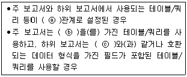
- ⓐ-일대일, ⓑ-필드, ⓒ-기본키
- ⓐ-일대다, ⓑ-기본키, ⓒ-기본키 필드
- ⓐ-일대일, ⓑ-레코드, ⓒ-기본키 필드
- ⓐ-일대다, ⓑ-기본키 필드, ⓒ-필드
(정답률: 71%)
51. 다음 중 폼의 탭 순서(Tab Order)에 대한 설명으로 옳지 않은 것은?
- 기본으로 설정되는 탭 순서는 폼에 컨트롤을 추가하여 작성한 순서대로 설정된다.
- [탭 순서] 대화상자의 [자동 순서]는 탭 순서를 위에서 아래로, 오른쪽에서 왼쪽으로 설정한다.
- 폼 보기에서 <Tab>키를 눌렀을 때 각 컨트롤 사이에 이동되는 순서를 설정하는 것이다.
- 탭 정지 속성의 기본 값은 '예'이다
(정답률: 67%)
52. 다음 중 테이블에서 내보내기가 가능한 파일 형식에 해당하지 않는 것은?
- 엑셀(Excel) 파일
- ODBC 데이터베이스
- HTML 문서
- VBA 코드
(정답률: 50%)
53. 다음 중 아래 두 개의 테이블 사이에서 외래 키(Foreign Key)에 해당하는 필드는? (단, 밑줄은 각 테이블의 기본 키를 표시함)(밑줄은 직원.사번, 부서.부서명 입니다.)
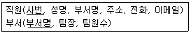
- 직원 테이블의 사번
- 부서 테이블의 팀원수
- 부서 테이블의 팀장
- 직원 테이블의 부서명
(정답률: 72%)
54. 다음 중 아래의 '학년별검색' 매개 변수 쿼리를 실행하여 나타나는 메시지 상자의 a에 2를, b에 3을 입력한 결과로 옳은 것은?
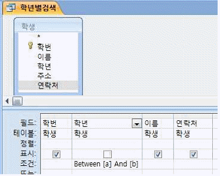
- 2학년과 3학년 레코드만 출력된다.
- 2학년 레코드만 출력된다.
- 3학년 레코드만 선택된다.
- 2학년과 3학년을 제외한 레코드만 출력된다.
(정답률: 70%)
55. 다음 중 아래의 <급여> 테이블에 대한 SQL 명령과 실행 결과로 옳지 않은 것은? (단, 빈 칸은 Null임)
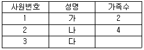
- SELECT COUNT(성명) FROM 급여; 를 실행한 결과는 3이다.
- SELECT COUNT(가족수) FROM 급여; 를 실행한 결과는 3이다.
- SELECT COUNT(*) FROM 급여; 를 실행한 결과는 3이다.
- SELECT COUNT(*) FROM 급여 WHERE 가족수 Is Null; 을 실행한 결과는 1이다.
(정답률: 61%)
56. 다음 중 아래의 설명에 해당하는 폼을 작성하기에 가장 용이한 방법은?
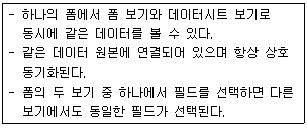
- 폼 도구 사용
- 폼 마법사 사용
- 여러 항목 도구 사용
- 폼 분할 도구 사용
(정답률: 73%)
57. 다음 중 Access에서 데이터를 찾거나 바꿀 때 사용하는 와일드카드 문자를 사용한 결과에 대한 설명이 옳지 않은 것은?
- 1#3 → 103, 113, 123 등 검색
- 소?자 → 소비자, 소유자, 소개자 등 검색
- 소[!비유]자 → 소비자와 소개자 등 검색
- b[a-c]d → bad와 bbd 등 검색
(정답률: 73%)
58. 다음 중 데이터의 형식에 관한 설명으로 옳지 않은 것은?
- 텍스트 형식에는 텍스트와 숫자 모두 입력할 수 있다.
- 숫자 형식에는 필드 크기를 설정하여 숫자 값의 크기를 제어할 수 있다.
- 메모 형식에는 텍스트와 비슷하나 최대 255자까지 입력 가능하다.
- 하이퍼링크 형식에는 웹 사이트나 파일의 특정 위치로 바로 이동하는 주소 데이터를 입력할 수 있다.
(정답률: 69%)
59. 다음 중 특정 데이터를 시각적으로 강조 표시하는 조건부 서식에 대한 설명으로 옳지 않은 것은?
- 하나 이상의 조건에 따라 폼과 보고서의 컨트롤 서식 또는 컨트롤 값의 서식을 변경할 수 있다.
- 컨트롤 값이 변경되어 조건에 만족하지 않으면 적용된 서식이 해제되고, 기본 서식이 적용된다.
- 폼이나 보고서를 다른 파일 형식으로 출력하거나 내보내도 조건부 서식은 유지된다.
- 지정한 조건 중 두 개 이상이 true이면 true인 첫 번째 조건의 서식만 적용된다.
(정답률: 51%)
60. 액세스에서 다음과 같은 폼을 편집하고자 한다. 다음 중 편집에 대한 설명이 옳지 않은 것은?
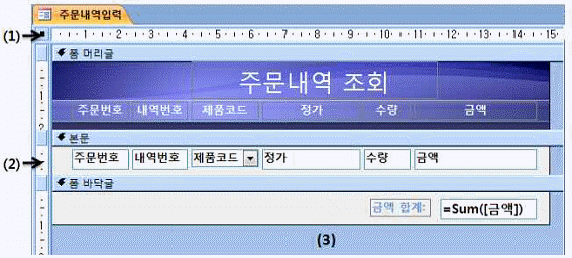
- (1)번 부분을 더블 클릭하면 폼의 속성 창을 열 수 있다.
- (2)번의 세로 눈금자를 클릭하면 본문의 모든 컨트롤을 선택할 수 있다.
- (3)번 부분을 더블 클릭하여 폼 바닥글의 배경색을 변경할 수 있다.
- 이런 폼의 기본 보기 속성은 '연속 폼'으로 하는 것이 좋다.
(정답률: 63%)